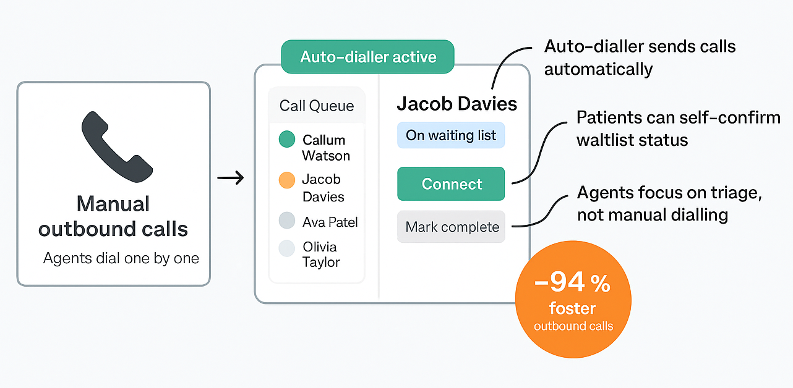
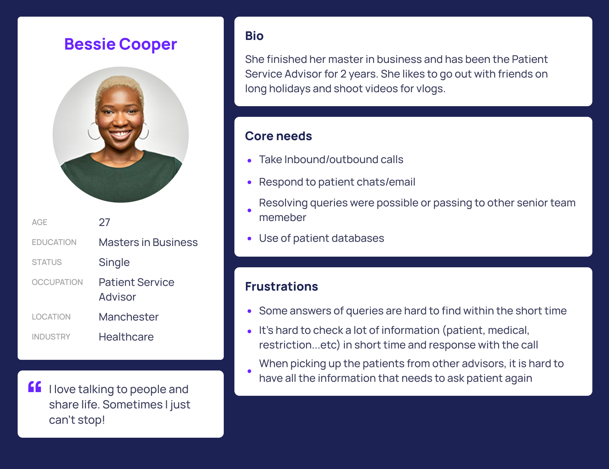
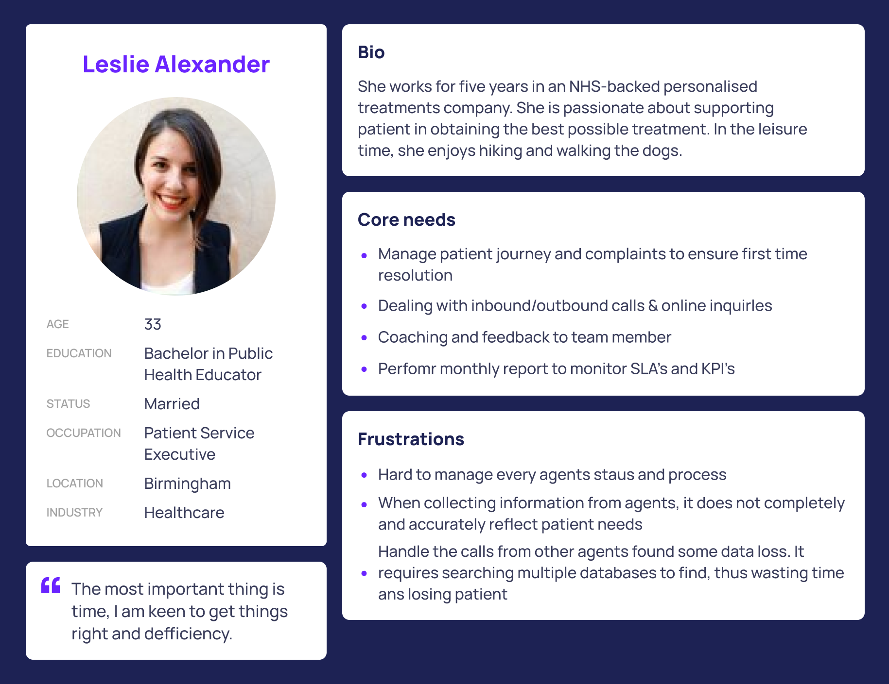
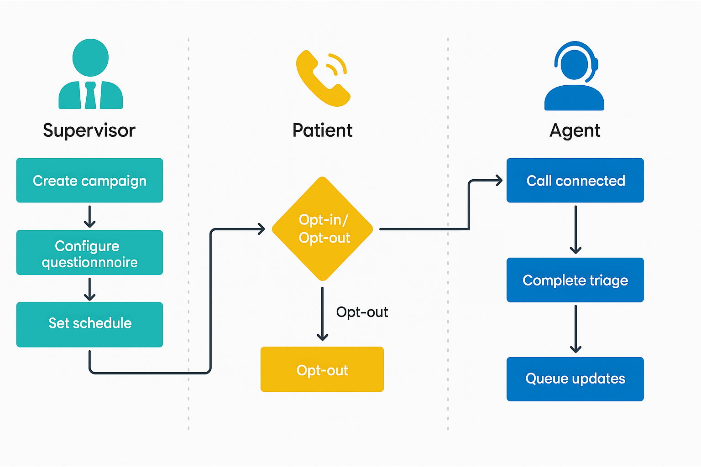

Transforming NHS MLCSU Contact Centre with Automated Outreach
Project Overview
Designed agent dashboards, admin tools, and patient flows that cut outbound call setup time by 94% and improved patient experience.
Challenge
NHS Midlands and Lancashire Commissioning Support Unit (MLCSU) manages patient referrals across large volumes of calls every day. Agents had to manually dial hundreds of patients to confirm appointments and waitlist preferences, while also handling inbound calls
Solution
- Agent triage dashboards
- Admin portal for auto-dialler campaigns
- Patient-facing questionnaire flows

Why it mattered
Efficiency in this system directly affected patient wait times, staff morale, and NHS service delivery. Solving it meant not just smoother operations, but also a faster, more reassuring experience for patients waiting on critical care.
My Role & Responsibilities
I was the sole UX/Product Designer, responsible for shaping the end-to-end experience over a 3-month delivery cycle, from research to prototyping and handoff.
Key Responsibilities
- Research & Discovery:
- Identified and mapped key stakeholders using a Stakeholder Association Map.
- Conducted a competitive analysis of digital contact-centre solutions through online research.
- Design & Prototyping:
- Created personas to capture agent and patient needs.
- Defined user flows to support triage, campaign setup, and patient questionnaires.
- Established a colour pattern and design style consistent with NHS branding.
- Produced wireframes and interactive prototypes in Figma.
- Collaboration & Delivery
- Partnered with the PM to capture requirements and validate direction.
- Worked with engineering to align flows with technical constraints and AWS Connect capabilities.
- Delivered annotated Figma prototypes and design documentation for build.
Research & Discovery
With only a 3-month timeline and no direct access to patients, I focused on stakeholder insights and secondary research. And created a Stakeholder Association Map to clarify relationships between patient services, referral teams, and contact-centre staff.

Mapped roles and interactions to clarify user needs and responsibilities
I conducted a competitive analysis of five contact-centre solutions, comparing functions, call/chat features, and back-office capabilities. The review exposed gaps in automation, knowledge support, and triage dashboards. Those insights helped shape my personas, user flows, and feature priorities for the agent dashboard, admin portal, and patient questionnaires.
Competitive Analysis Insights
- Automation gaps: Few platforms offered proactive task automation or triage dashboards.
- Limited patient-facing tools: Most solutions lacked simple self-service flows for status confirmation.
- Weak knowledge support: Internal collaboration and knowledge sharing were inconsistent.

These findings shaped my design priorities,leading to the development of auto-dialler campaigns, patient self-service questionnaires, and a triage-focused agent dashboard.
Design Fundation
Using insights from the stakeholder map and competitive analysis, I defined personas for both contact-centre agents and patients to balance operational efficiency with patient experience.
I then mapped end-to-end user flows for three core journeys:
- Agent triage dashboard: helping agents prioritise and manage calls efficiently.
- Admin portal: enabling staff to create and manage auto-dialler campaigns.
- Patient questionnaires: allowing patients to confirm or opt-out of waiting lists.
With the flows in place, I established a colour palette and typography system aligned with NHS branding and accessibility standards. I created wireframes and interactive prototypes in Figma , iterating with the PM and engineering team to validate requirements and technical feasibility.
Visual Style Snapshot

Established NHS-compliant colour palette and typography for accessibility and consistency.
Persona construction
While patient needs were captured indirectly through business requirements, our primary focus was on contact-centre agents and supervisors, the users most impacted by manual dialling inefficiencies.
Persona 1: Agent

Persona 2: Supervisor

Defined personas for contact-centre agents and supervisors to ensure designs addressed their day-to-day challenges and supported triage efficiency.
User Flows
To translate insights into actionable solutions, I mapped the end-to-end journeys for supervisors, patients, and agents. This ensured alignment across the team and gave engineers clarity on the required screens and system logic before wireframing.
Key Flow Highlights:
- Supervisor: Creates campaign → Configures questionnaire → Sets schedule
- Patient: Receives auto-dialler call → Chooses opt-in/opt-out
- Opt-in: Call connects directly to an available agent
- Opt-out: Status updated, no manual follow-up required
- Agent: Handles connected call, completes triage, and queue updates automatically

Mapped user flows to connect supervisor setup, patient decisions, and agent triage into a single seamless journey, reducing manual dialling and freeing agents to focus on higher-priority tasks.
Wireframes & Prototypes
With the flows validated, I translated them into low-fidelity wireframes to map out screen layouts and user interactions. These were quickly iterated with the PM to confirm requirements and feasibility.
I then developed interactive prototypes in Figma, focusing on the three key areas:
- Agent Dashboard: Clear call queue, patient details, quick actions, and auto-dialler status indicator.
- Admin Portal: Simple campaign creation, scheduling controls, and status reporting.
- Patient Questionnaire: Mobile-friendly yes/no flow with optional live agent connection.
These prototypes became the single source of truth for the engineering team and supported smooth handoff.

Agent dashboard with live call queue, patient contact purpose, and integrated knowledge centre. Giving agents context and resources before connecting

Admin portal for campaign creation, agent management, schedule control, and patient message settings. Enabling supervisors to manage outreach with full visibility.

Mobile-friendly questionnaire flow allowing patients to opt-in/out and connect to an agent when needed. Reducing unnecessary follow-up calls.
Outcome & Reflection
Overall, the project transformed NHS MLCSU's contact-centre operations. The integrated solution allowed agents to work smarter, supervisors to manage outreach effectively, and patients to take control of their care journey..
Key Results:
- 94% reduction in outbound call setup time using the auto-dialler
- Agents freed to focus on urgent inbound calls and high-priority cases
- Supervisors gained full visibility and control over campaigns, agent schedules, and message settings
- atients empowered to self-confirm waitlist status, reducing unnecessary follow-up calls and missed connections
"The experience reinforced the importance of designing for both operational efficiency and user empowerment. Even small workflow improvements can have a dramatic impact on service quality in healthcare settings." — Reflection
This project demonstrated how thoughtful UX design connects operational efficiency with user empowerment, improving service quality for staff and patients while helping NHS teams work smarter.